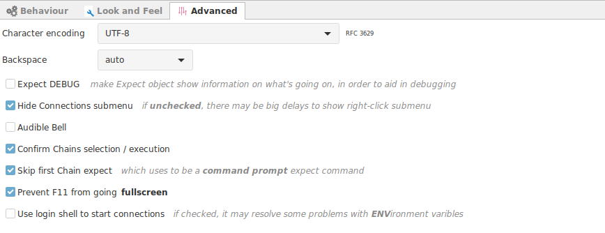
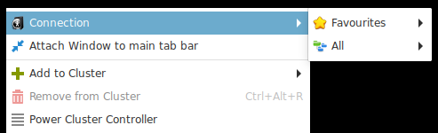
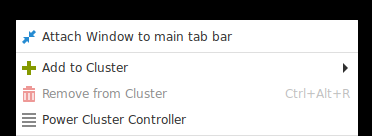

Terminal Advanced Settings
This options apply to all terminals. If you need a particular terminal to behave differently is best to configure the look and feel options at the connection level.

- Character Encoding : Decode characters sent by the remote server before showing in the terminal.
- This options is used when connecting to old servers that have a regional encoding installation. Current servers should work with UTF-8 as a standard.
- Backspace : Select the backspace character to send.
- Expect DEBUG : Enable to see a full trace of the actions taken by the Expect module.
- The expect module reads and processes login lines received in the terminal to detect: login patterns, password request, etc.
- Hide Connections submenu : (Enable recommended) When you right click on the terminal, a popup menu will show several options available. Normally the menu will include a list of all current connections available will be listed too. If your connections tree is too big, the pop up menu will take several seconds to show.


You can always access your connections from the connection tree, or right clicking on the system tray.
- Audible Bell : Produce a sound when the terminal wants to send a bell event. (Not available in all vte versions)
- Confirm chains selection / execution : * pending
- Skip first Chain expect : Ignore the first event sent by terminals, normally is an empty command sent to expect aware applications.
- Prevent F11 from going full screen : Disable F11 full screen option.
- Use login shell to start connections : This is not necessary in general. But it can be used if your terminals behave in an unexpected way for the lack of Environment variables available.